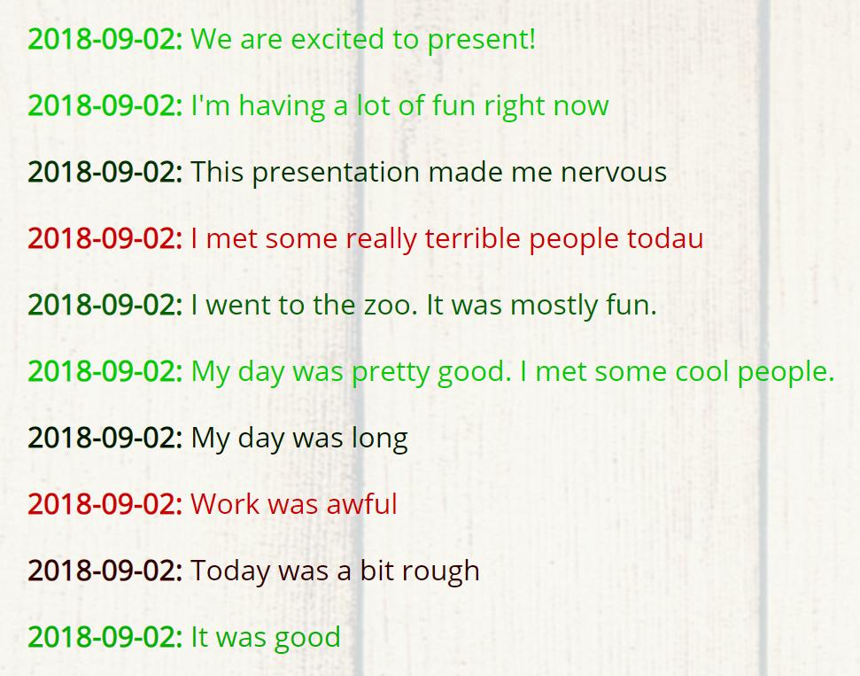

Peggy Li
Projects
GitHub
LinkedIn
Email
Hello world!
My name is Peggy Li and I'm a computer science major at Brooklyn College.
Projects

ByteHacks 2018: Roobi
expand_more
Built SMS-focused journaling and mood-tracking application with a browser-based dashboard
Developed Python/Flask backend to manage and store users, past texts, and mood information
Added API endpoint to Flask backend to communicate with Twilio SMS-messaging service
Utilized Google Cloud Natural Language API to determine text moods using sentiment analysis
Created and integrated various views/templates to display previous texts and moods in browser
Won Best Use of Twilio and Second Place overall out of 31 teams
View code
View project
Whack-a-Prof
expand_more
In-browser video game
Variation of Whack-a-Mole with trustees, deans, professors, and students as moles
Uses a combination of CSS and jQuery animations
Made with: HTML, CSS, JavaScript, jQuery
View code
View project
Battlecode 2018 project
expand_more
AI player that controls multiple units in a real-time strategy game
Uses A-Star algorithm for pathfinding
Finds, and limits units to, the largest contiguous area on the map
Placed in the top 64 out of 1091 teams globally
Made with: Python
View code
ExcessEats
expand_more
Developed as part of CUNY Hackathon Fall 2017
Developed front-end for interactive web application with Google Maps component
Made with: HTML, CSS, Javascript, jQuery, Bootstrap
View code
View project
Robotics: Path-planning
expand_more
Finds a path around several obstacles by implementing the A* algorithm
Also navigates a simulated robot through the resulting path
Made with: C++
View code
Personal Website
expand_more
A responsive website with a custom grid system and Material-Design-inspired cards
Made with: HTML, CSS, jQuery
View code